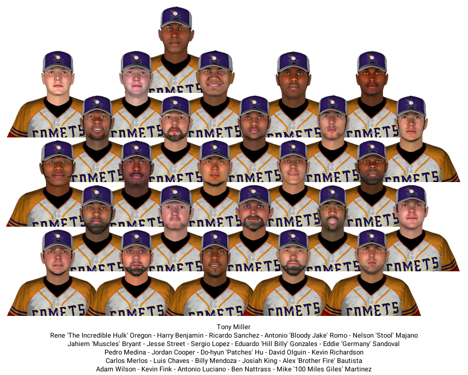

This Is the Test
Ernie Bewell and Big Earl Look Back at the August Division Challenges
 Experiencing Action Baseball
Experiencing Action Baseball

ABC Western Division
71–60 · 1 games back · Seattle Stadium
The latest final on August 30 was Denver 2, Seattle 1.
Ernie Bewell and Big Earl Look Back at the August Division Challenges
Ernie Bewell and Big Earl debate the August Division Challenges and put Earl’s pennant-race forecast on the record.
Special Coverage. This pre-simulation guide preserves the standings, schedule and questions as they stood before play on August 20. All August 20–30 matchups are scheduled, with…
| Season | Franchise | W–L | Finish |
|---|---|---|---|
| 1980 | Seatlle Comets | 74–88 | Regular season |
| 1979 | Seatlle Comets | 87–75 | Tournament |
| 1978 | Seatlle Comets | 85–77 | Regular season |
| 1977 | Seatlle Comets | 72–90 | Regular season |
| 1976 | Seatlle Comets | 80–82 | Regular season |
| 1975 | Seatlle Comets | 92–70 | Tournament |
| 1974 | Seatlle Comets | 79–83 | Regular season |
| 1973 | Seatlle Comets | 81–81 | Regular season |
| 1972 | Seatlle Comets | 87–75 | Regular season |
